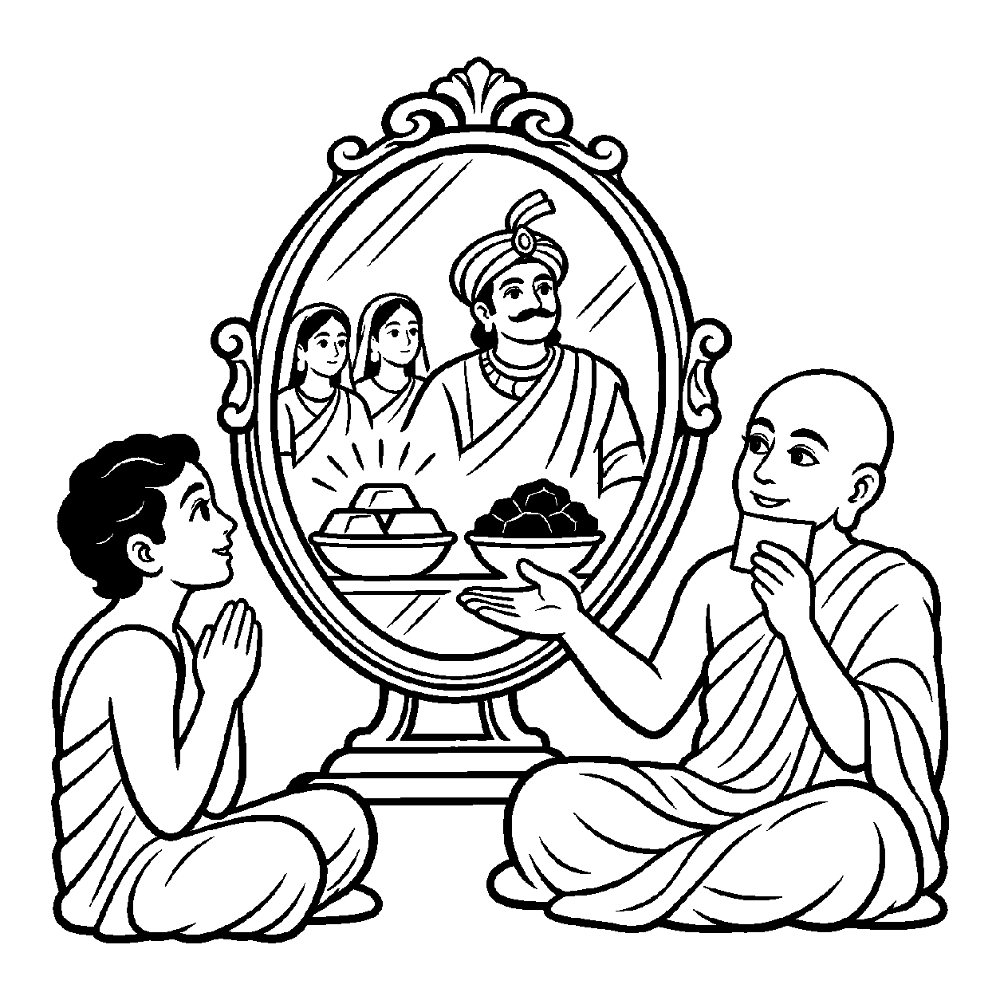

એક વિશાળ અને નિર્મળ કાચનો દર્પણ હોય. તેની સામે એક જીવંત મનુષ્ય (ચેતન-સ્વજાતિ) ઊભો રહે અને બાજુમાં એક જડ પથ્થર (અચેતન-વિજાતિ) મૂકવામાં આવે. દર્પણ બંનેને એકસાથે પોતાના નિર્મળ પટ પર પ્રતિબિંબિત કરે છે. દર્પણ મનુષ્યને જાણીને જીવંત નથી બની જતું કે પથ્થરને જાણીને જડ નથી થઈ જતું; તે બંનેને સમભાવે ઝીલે છે. તેવી જ રીતે જ્યારે આત્માનું કેવળજ્ઞાન કે સામાન્ય જ્ઞાન સ્વજાતિ (અન્ય જીવો અને પોતાનો આત્મા) તથા વિજાતિ (પુદ્ગલ, ધર્મ, અધર્મ, આકાશ, કાળ જેવા અજીવ દ્રવ્યો) — આ બંને પ્રકારના જ્ઞેયોમાં એકસાથે વ્યાપીને — "જ્ઞાન જીવ અને અજીવ બંને સમસ્ત લોકાલોકને જાણે છે" — એમ સ્વજાતિ-વિજાતિ જ્ઞેયો સાથે જ્ઞાનના વ્યાપક સંબંધનું વાણી દ્વારા પ્રતિપાદન કરવામાં આવે, ત્યારે તે 'સ્વજાતિ-વિજાતિ સદ્ભૂત વ્યવહાર' કહેવાય છે.
આ નય સદ્ભૂત છે કારણ કે જાણવાની શક્તિ આત્મામાં જ સત્ છે. અને તે 'સ્વજાતિ-વિજાતિ' છે કારણ કે જ્ઞાનનો વિષય કેવળ ચેતન નથી, કે કેવળ જડ નથી; કિંતુ સમસ્ત ષડ્દ્રવ્ય તેના વિષય બને છે. જ્ઞાન જ્ઞેયમાં જાય છે એ વ્યવહાર કથન છે, વાસ્તવમાં જ્ઞાન પોતાનામાં રહીને જ સર્વ જ્ઞેયોને પ્રતિબિંબિત કરે છે.
આ નય સાધકને સમજાવે છે કે તારા જ્ઞાનની સીમા કેવળ આ નાનું શરીર નથી; તારા જ્ઞાનમાં સમસ્ત બ્રહ્માંડને સમાવી લેવાની અનંત શક્તિ છુપાયેલી છે!
જીવ અજીવ સહુ જ્ઞેયને, જાણે જ્ઞાન અપાર;
સ્વજાતિ વિજાતિ નય વદે, પ્રગટે બોધ ઉદાર.
દર્પણમાં સહુ ભાસતાં, દર્પણ રહે અસંગ;
જ્ઞાન વ્યાપે જગ મધ્ય પણ, ચડે ન કોઈ રંગ.
સાધકને સમજાવે છે કે તારા જ્ઞાનની સીમા કેવળ આ નાનું શરીર નથી; તારા જ્ઞાનમાં સમસ્ત બ્રહ્માંડને સમાવી લેવાની અનંત શક્તિ છુપાયેલી છે.

ધર્મક્ષેત્રના એક આશાસ્પદ શિષ્ય જ્ઞાનપ્રકાશના મનમાં એક ભારે જિજ્ઞાસા જાગી હતી: "જ્યારે હું કોઈ સંત કે ભગવાનનું ધ્યાન ધરું છું ત્યારે મારું મન પવિત્ર બને છે, પણ જ્યારે કોઈ દુષ્ટ માણસ કે ગંદી વસ્તુને જોઉં છું ત્યારે મારું જ્ઞાન કેમ અશાંત થઈ જાય છે? શું જ્ઞાન જે વસ્તુને જાણે છે તેવું જ બની જાય છે? જો અરિહંત ભગવાન સમગ્ર સંસારના પાપો, નરકની યાતનાઓ અને ગંદકીને પણ કેવળજ્ઞાનમાં જાણે છે, તો શું પ્રભુનું જ્ઞાન મલિન નથી થઈ જતું?" જ્ઞાનપ્રકાશના ચિત્તમાં જ્ઞાન અને જ્ઞેયના સંબંધ અંગે ભારે ગૂંચવણ ઊભી થઈ હતી.
તે જ સમયે સંઘના પ્રખર અધ્યાત્મવિદ્ આચાર્યશ્રી સુમતિસાગરજી નગરમાં પધાર્યા. જ્ઞાનપ્રકાશે પોતાનો સંશય મુનિરાજ સમક્ષ મૂક્યો. આચાર્યશ્રીએ રાજદરબારના વિશાળ સ્ફટિક દર્પણ સામે જ્ઞાનપ્રકાશને ઊભો રાખ્યો. દર્પણની સામે રાજા, મુનિરાજ, દાસીઓ તેમજ જડ સોનું અને કાળો કોલસો મૂકવામાં આવ્યા. આચાર્યશ્રીએ પૂછ્યું, "જ્ઞાનપ્રકાશ, દર્પણમાં શું દેખાય છે?" જ્ઞાનપ્રકાશે કહ્યું, "મહારાજ, દર્પણમાં રાજા પણ દેખાય છે અને કાળો કોલસો પણ દેખાય છે!" આચાર્યશ્રીએ પૂછ્યું, "શું રાજાને જોઈને દર્પણ ધનવાન થયું કે કોલસાને જોઈને દર્પણ કાળું થયું?" જ્ઞાનપ્રકાશે કહ્યું, "ના, દર્પણ તો જેવું નિર્મળ હતું તેવું જ નિર્મળ રહ્યું!" આચાર્યશ્રીએ સ્મિત સાથે કહ્યું, "બસ! સ્વજાતિ-વિજાતિ સદ્ભૂત વ્યવહાર આ જ રહસ્ય સમજાવે છે! આત્માનું જ્ઞાન આ દર્પણ જેવું અસંગ છે. તે સ્વજાતિ જીવોને પણ જાણે છે અને વિજાતિ જડ પુદ્ગલોને પણ જાણે છે! જ્ઞાન સર્વત્ર વ્યાપે છે છતાં તે કોઈ જ્ઞેયથી લિપ્ત થતું નથી. અજ્ઞાની જીવ જ્ઞેયોમાં રાગ-દ્વેષ કરીને દુઃખી થાય છે, જ્યારે કેવળજ્ઞાની દર્પણની જેમ કેવળ જાણીને સદા પરમાનંદમાં રહે છે!" આચાર્યશ્રીના આ પરમ સત્યનું પાન કરતાં જ જ્ઞાનપ્રકાશનો સંશય કપાઈ ગયો અને તેમને જ્ઞાનની અલિપ્ત સમદ્રષ્ટિનો સાક્ષાત્કાર થયો.
જો આ નયને એકાંત સત્ય માનીને સાધક એમ માની લે કે જ્ઞાન સાચે જ બહાર જઈને જ્ઞેયરૂપ બની જાય છે, તો જ્ઞાન અને જ્ઞેયનું સાંકર્ય થઈ જવાનો સાંખ્ય મત જેવો દોષ ઊભો થાય છે.
આ નય જ્યારે અસંગ જ્ઞાયક સ્વભાવ સાથે જોડાય છે, ત્યારે સાધક સર્વ જીવાજીવને જાણવા છતાં પણ કોઈનામાં રાગ-દ્વેષ ન કરતાં કેવળ જ્ઞાતા-દ્રષ્ટા રહીને મોક્ષ સાધે છે.